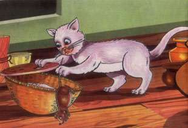

A greedy mouse saw a basket full of corn. He wanted to eat it. So he made a small hole in the basket. He squeezed in through the hole. He ate a lot of corn. He felt full. He was very happy.
Now he wanted to come out. He tried to come out through the small hole. He could not. His belly was full. He tried again. But it was of no use.
The mouse started crying. A rabbit was passing by. It heard the mouse’s cry and asked: “Why are you crying my friend?”
The mouse explained: “I made a small hole and came into the basket. Now I am not able to get out through that hole.”
The rabbit said: “It is because you ate too much. Wait til your belly shrinks”. The rabbit laughed and went away.
The mouse fell asleep in the basket. Next morning his belly had shrunk. But the mouse wanted to eat some corn. So he ate and ate. His belly was full once again. He thought: “Oh! Now I will go out tomorrow”.
The cat was the next passerby. He smelt the mouse in the basket. He lifted its lid. He ate the mouse.